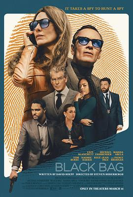

6.0
黑袋行动
Black Bag
2025
英国
评分 6.0
导演:
史蒂文·索德伯格
演员:
凯特·布兰切特 / 迈克尔·法斯宾德 / 玛瑞萨·阿贝拉 / 娜奥米·哈里斯 / 皮尔斯·布鲁斯南
类型:
剧情,惊悚
剧情简介
英国情报机构资深特工乔治·伍德豪斯（迈克尔·法斯宾德 饰）被派往追查一项关乎国家机密的泄密案：代号为“Severus”的网络武器正从内部系统外流。令他震惊的是，五名嫌疑人之一居然是他的妻子凯瑟琳（凯特·布兰切特 饰），两人一直并肩作战却从未真正面对彼此的信任。为了搞清真相，乔治邀请妻子和其他四位特工夫妇来到他们的家中进行晚宴——这场看似轻松的聚餐，实际上布满心理战术与暗电探机。食物里下药、酒杯轻晃、灯光低沉、话语冷锋，似乎每句寒暄都隐藏着讯问、怀疑与反转。凯瑟琳保持着冷静优雅的外表，她的眼神淡然，似乎总在人前微笑而在人后沉思。当乔治偷窥她的电脑、追踪她的瑞士行程、一笔神秘的存款在苏黎世银行浮出水面，他意识到自己或许陷入了布局已久的圈套。身为丈夫、为人父、为国家效命，这几条身份轨迹骤然交叉，他只能在信任与怀疑之间做出选择。影片亮点在于：它几乎舍弃了传统谍战片的大枪爆炸，更多聚焦于餐桌、书房、卧室中隐蔽的对峙，镜头近至酒杯反光、领带螺纹、窗帘微颤。夫妻之间的默契，团队之间的裂痕，国家安全的威胁——在低光环境中如影随形。影片在冷酷的游戏中探问：当你最深的盟友可能同时是最大的不确定，你还能坚守什么？如果你喜欢那种“看似平静实则暗藏刀锋”的谍战风格，《黑袋行动》将带你进入一个充斥信任崩塌与真相迷雾的间谍世界。